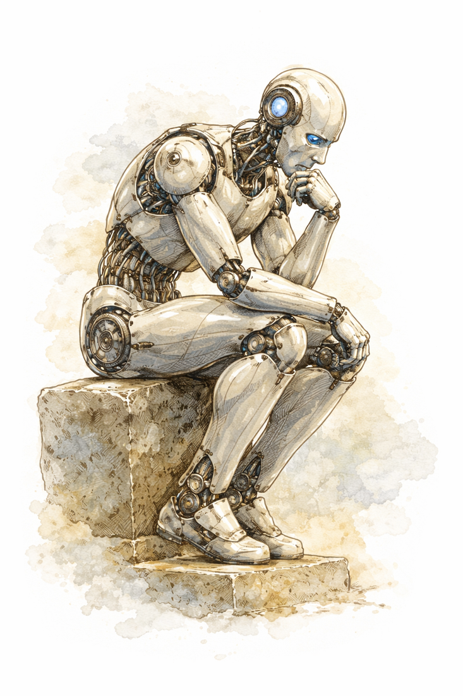

Praktisch · Fundiert · Erprobt
KI im Unterricht –
was wirklich funktioniert.
Konkrete Tipps für den Einsatz von KI-Werkzeugen, Hinweise auf aktuelle Forschung und ein Forum für den kollegialen Austausch. Kein Hype – sondern fundierte Praxis.

Praktische Tipps
Auf eine Karte klicken für mehr Details und Literaturverweise.
Tipp 01
KI als Sparringspartner, nicht als Ghostwriter
Schülerinnen und Schüler sollen KI nutzen, um Ideen zu entwickeln und Argumente zu prüfen – nicht um fertige Texte zu übernehmen.
MethodikTipp 02
Prompts gemeinsam erarbeiten
Ein guter Prompt ist keine Trivialität. Im Unterricht lohnt es sich, Schritt für Schritt zu zeigen, wie man eine KI-Anfrage präzisiert.
UnterrichtspraxisTipp 03
KI-Ergebnisse kritisch hinterfragen
KI-Systeme halluzinieren. Aufgaben, bei denen KI-Ausgaben überprüft und korrigiert werden müssen, sind hervorragende Übungen für Quellenkritik.
MedienkompetenzTipp 04
Transparenz als Grundregel
Klare Absprachen im Kurs: Wann und wie darf KI eingesetzt werden? Schülerinnen und Schüler sollten KI-Nutzung dokumentieren.
SchulentwicklungTipp 05
Differenzierung durch KI
KI kann individuelle Erklärungen auf verschiedenen Niveaustufen liefern – hilfreich bei Verständnislücken.
DifferenzierungTipp 06
Lernprozess statt Ergebnis bewerten
Bei KI-gestützten Aufgaben verschiebt sich der Bewertungsfokus. Portfolios und Reflexionsprotokolle machen den Umgang mit KI sichtbar.
LeistungsmessungTipp 07
KI-Ethik explizit thematisieren
Datenschutz, Bias, Verantwortung – diese Fragen gehören in den Unterricht.
KI-EthikTipp 08
Routinen einführen, nicht improvisieren
Feste „KI-Phasen" schützen vor unkritischer Abhängigkeit: erst selbst denken, dann KI befragen.
UnterrichtsplanungMaterialien
Integration von KI in den Unterricht
Eine mit NotebookLM erstellte Präsentation zu Möglichkeiten der KI-Integration – zugleich ein Praxisbeispiel für den Einsatz von KI-Werkzeugen.
→ Öffnen 📖 BuchVom Schatten zur Substanz
Praktische Tipps zum Einsatz von KI im Unterricht – von der Unterrichtsvorbereitung bis zur Leistungsbewertung.
→ Öffnen 📖 BuchWie denkt eine Maschine?
Verständliche Erklärung, wie ein Large Language Model funktioniert – auch ohne technischen Hintergrund lesbar.
→ Öffnen 🔬 StudieKognitive und strukturelle Transformation durch KI
Vergleichende Analyse der Auswirkungen von KI auf Lernprozesse und Berufsfelder in Deutschland 2025.
→ Öffnen 🛠️ AnleitungApps erstellen und hosten mit KI
Schritt-für-Schritt-Anleitung zur Entwicklung eigener Web-Apps mit KI – auch ohne Programmierkenntnisse.
→ Öffnen 🛠️ AnleitungLaTeX mit KI
Anleitung zur Erstellung professioneller Dokumente mit LaTeX und KI-Unterstützung – von der Installation bis zu fertigen Unterrichtsmaterialien.
→ ÖffnenAktuelle Forschung
Generative AI Can Harm Learning
Kontrollierte Feldstudie: KI-Unterstützung verbessert kurzfristig die Leistung, senkt aber den Lernerfolg bei späteren Tests ohne KI.
→ SSRN PreprintAI and the Future of Education
Chancen für adaptives Feedback und Differenzierung, aber auch Risiken durch Kompetenzatrophie.
→ Tech Know LearnChatGPT and Student Learning Outcomes
Randomisierte Kontrollstudie: Kurzfristig bessere Texte, aber schwächere eigenständige Schreibleistung bei Folgeaufgaben.
→ NBER Working PaperVivian: A Conversational AI Tutor
Bei strukturiertem Einsatz mit Reflexionspflichten signifikante Lerngewinne. Entscheidend war die didaktische Einbettung.
→ ACM Digital LibraryKI im deutschen Schulunterricht
Repräsentative Befragung: Hohes Interesse, aber erhebliche Unsicherheit bezüglich Leistungsbewertung und Datenschutz.
→ Waxmann VerlagLarge Language Models and the Future of Education
Konkrete Unterrichtsszenarien: von simulierten Expertengesprächen bis zu adaptivem Selbsttest.
→ SSRNKI-Werkzeuge im Überblick
Gemini 3.1 Pro
Multimodale Power & nahtlose Workspace-Integration.
Claude 4.6 (Opus & Sonnet)
Der Spezialist für Textanalyse, Logik und LaTeX.
ChatGPT (GPT-5.4)
Vielseitiger Allrounder mit neuem „Thinking"-Modus.
NotebookLM Plus
Quellenbasierte Wissensarbeit & Audio-Overviews.
Perplexity
KI-Suche mit Quellenangaben.
Wolfram Alpha
Physik, Chemie, Mathe – ohne Halluzinieren.
Interaktive Simulationen
Geo- und Heliozentrisches Weltbild
Animierte Planetenbahnen mit Umschalter zwischen dem geozentrischen und heliozentrischen Modell. Die Epizykel werden in Echtzeit aufgezeichnet.
→ Simulation öffnen ☢️ KernphysikRadioaktiver Zerfall – Würfelmodell
3D-Würfelsimulation mit Physik-Engine. Modelliert den statistischen Charakter des radioaktiven Zerfalls – wahlweise mit W6, 2×W6 (Gauß-Verteilung) oder W20.
→ Simulation öffnen ⚡ ElektrodynamikElektronenablenkröhre
Simulation der Kathodenstrahlröhre mit einstellbarer Beschleunigungs- und Ablenkspannung, Plattenabstand und Driftstrecke. Berechnet die Ablenkung in Echtzeit.
→ Simulation öffnen ⚗️ ChemieChemische Kinetik – A + B ⇌ C + D
Teilchensimulation des chemischen Gleichgewichts. Zeigt, wie sich Hin- und Rückreaktionsrate auf die Gleichgewichtslage auswirken – mit Live-Konzentrationsdiagramm.
→ Simulation öffnenForum & Diskussion
Erfahrungen austauschen, Fragen stellen, Materialien teilen – hier ist Raum dafür.